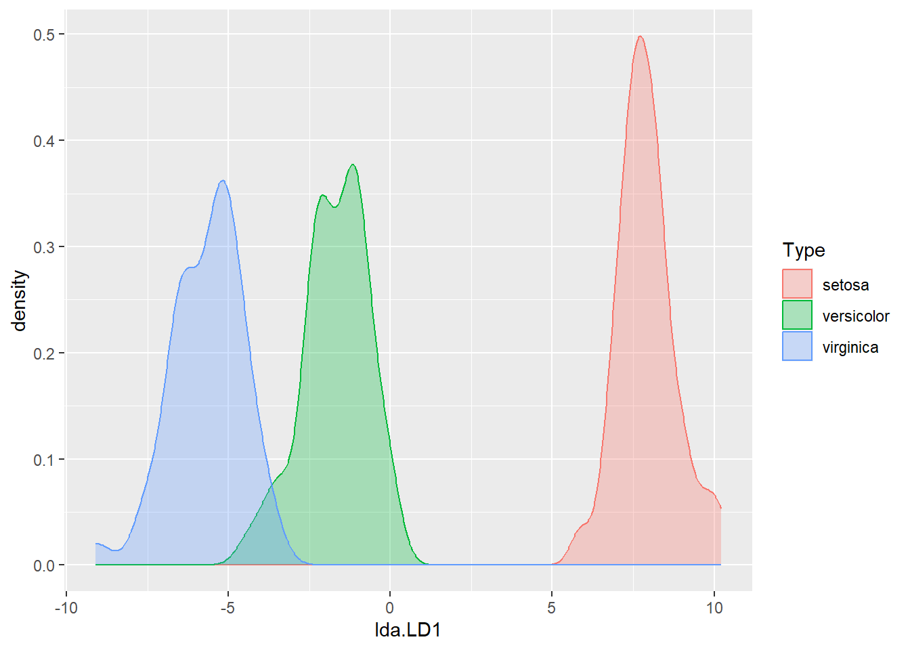
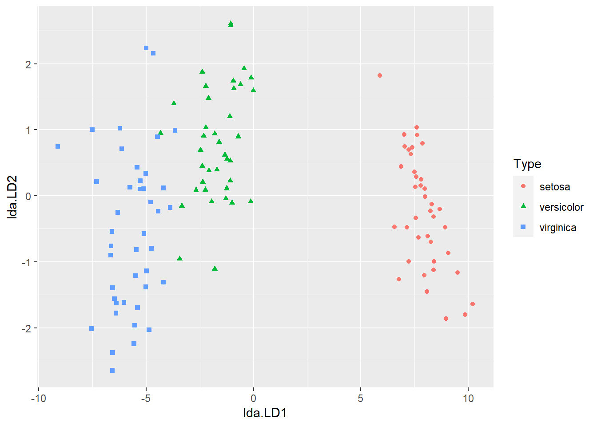

3 LDA and QDA: Iris dataset
Let's continue the analysis on Iris dataset, but now using discriminant analysis.
3.1 Checking assumptions
The ggpairs plot produced in previous section suggests that the Gaussian assumption is roughly satisfied. In addition, we also need to check if the groups have equal covariance.
for (i in 1:4) {
cat(colnames(iris)[i],sep="\n")
print(aggregate(iris[,i],by=list(iris$Species),var)) #compute variance for each group
}## Sepal.Length
## Group.1 x
## 1 setosa 0.1242
## 2 versicolor 0.2664
## 3 virginica 0.4043
## Sepal.Width
## Group.1 x
## 1 setosa 0.14369
## 2 versicolor 0.09847
## 3 virginica 0.10400
## Petal.Length
## Group.1 x
## 1 setosa 0.03016
## 2 versicolor 0.22082
## 3 virginica 0.30459
## Petal.Width
## Group.1 x
## 1 setosa 0.01111
## 2 versicolor 0.03911
## 3 virginica 0.07543Results suggest that considerable differences in the variances for Sepal Length and Petal Length. Therefore, it may not be very appropriate to apply LDA. Nonetheless, to illustrate how LDA and QDA works, we will run both models in this example.
3.2 LDA
Since there is no parameter to select in LDA or QDA, we only need to split the data into training and test sets.
set.seed(1)
n <- nrow(iris)
ind <- sample(c(1:n), floor(0.8*n))
iris.train <- iris[ind,]
iris.test <- iris[-ind,]Next, we implement LDA by using the lda function.
## Call:
## lda(Species ~ ., data = iris.train)
##
## Prior probabilities of groups:
## setosa versicolor virginica
## 0.3250 0.3167 0.3583
##
## Group means:
## Sepal.Length Sepal.Width Petal.Length Petal.Width
## setosa 5.008 3.421 1.462 0.2513
## versicolor 5.976 2.768 4.308 1.3211
## virginica 6.647 2.984 5.595 2.0442
##
## Coefficients of linear discriminants:
## LD1 LD2
## Sepal.Length 0.7682 -0.1347
## Sepal.Width 1.6720 -2.0470
## Petal.Length -2.2383 1.0337
## Petal.Width -2.7061 -2.9118
##
## Proportion of trace:
## LD1 LD2
## 0.9906 0.0094Since we have three classes, two (\(3-1\)) linear discriminant functions are produced. We could see how the first linear discriminant function separates the three classes by using ldahist function or by using ggplot.

dataset <- data.frame(Type=iris.train$Species, lda=iris.pred.tr$x)
ggplot(dataset, aes(x=lda.LD1)) +
geom_density(aes(group=Type, colour=Type, fill=Type), alpha=0.3)
The first linear discriminant is quite effective in separating setosa from the other classes, but less effective in separating versicolor and virginica.
While R could automatically help us make predictions, let's try to manually create a classification rule using only LD1 based on the figure above.
# The classification rule is manually designed as follows:
# classify observations to virginica if LD1 < -3.5;
# classify observations to versicolor if -3.5 <= LD1 <= 3;
# classify observations to setosa if LD1 > 3
pred.LD1 <-rep("versicolor",nrow(iris.train))
pred.LD1[iris.pred.tr$x[,1] < -3.5] <- "virginica"
pred.LD1[iris.pred.tr$x[,1] > 3] <- "setosa"
mean(pred.LD1==iris.train$Species)## [1] 0.9833This shows that we have a correct classification rate of 98.3% on the training data.
Challenge: How might you decide the optimal cutting points instead of using \(-3.5\) and \(3\) in the classification rule above?
Let's now move to using two linear discriminant functions and see if that improves the classification accuracy. First, we could visualise how LD1 and LD2 together separate the three classes by using either of the following two comments
# plot(iris.pred.tr$x[,1],iris.pred.tr$x[,2], col=train.data$Species,
# pch=as.numeric(train.data$Species), xlab="LD1", ylab="LD2")
ggplot(dataset, aes(x=lda.LD1, y=lda.LD2)) +
geom_point(aes(group=Type, colour=Type, shape=Type))
Now let's compute the correct classification rate again, but using both LD1 and LD2.
## [1] 0.975The correct classification rate even decreases slightly compared with using LD1.
Finally, let's use the built LDA to predict species for test data. The correct classification rate is 100%, great!
## [1] 1